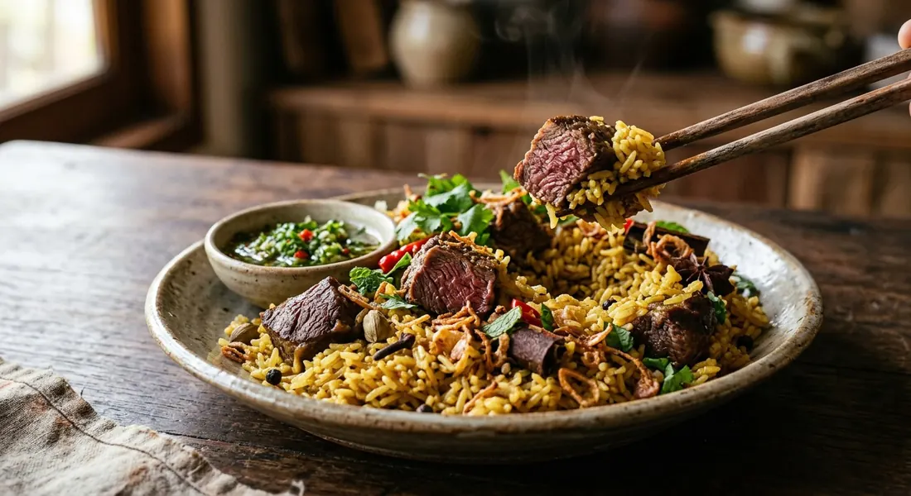

Beef simmered in a spiced milk broth, jasmine rice cooked in that same broth, and a sweet-sour mint-and-chilli relish — Thailand's answer to biryani, and the beef sibling of khao mok gai.

Khao mok is Thailand's Muslim biryani. TrueID's writer traces the line: the dish belongs to the Muslim communities across the region, its origin is Persian, and it arrived in Thailand with Persian traders — the same merchants' route that carried the spice vocabulary of cardamom, cinnamon and saffron into the Thai-Muslim kitchen. Most of Thailand knows khao mok gai, the chicken version sold from yellow-rice stalls everywhere; khao mok nuea is the rarer beef sibling, and the one beef eaters argue is the deeper plate.
The structure is constant across every source: meat and rice never meet as strangers. The meat is cooked in a spiced, dairy-rich broth — milk, yogurt or evaporated milk depending on the kitchen — and the rice is then cooked in that broth, soaking up everything the beef left behind. Krua Khun Toi's recipe from ร้านสุไบดะห์ makes the sequence explicit: the beef shin simmers two hours with curry powder, cinnamon, cardamom, milk and saffron, then the pot is tipped into a rice cooker, the beef is lifted out, and the rice cooks alone in the beef broth — twenty minutes, and the rice has become the dish.
Then there is the plate around it. Every source agrees on หอมเจียว, the crispy fried shallots, and cold cucumber — Bloggang's แม่ใบตอง buys her shallots ready-fried at Bang Rak market, which is as honest a shortcut as Thai cooking offers. And no khao mok is complete without its relish: the green เครื่องจิ้ม — chillies, mint, shallots, garlic, usually aged ginger, blended into a sweet-sour vinegar syrup. TrueID's writer goes further and says what the stall-owners know: khao mok wants a bowl of ต้มซุปเนื้อ, the sour beef soup, to drink between spoonfuls.
| Thai | English | Amount |
|---|---|---|
| เนื้อวัวน่องลาย | Beef shin | 2 kg |
| ข้าวขาวดอกมะลิ | Jasmine rice | 1.5 kg |
| เครื่องสามเกลอ | Three-friends paste (garlic, coriander root, peppercorns) | to taste |
| น้ำมันหอมเจียว | Fried-shallot oil | 100 g |
| ผงกะหรี่ | Curry powder | 100 g |
| เกลือ | Salt | 5 tbsp |
| น้ำตาลทราย | Sugar | 250 g |
| อบเชย | Cinnamon sticks | 5 |
| ลูกเค็น | Cardamom pods | 10 |
| นมสด | Fresh milk | 385 g |
| น้ำสะอาด | Water | 1.5 L |
| ผงหญ้าฝรั่น | Saffron powder | ½ tsp |
| สะระแหน่ | Mint | 1 pinch |
| ผักชี | Coriander | 10 stalks |
| มะเขือเทศสีดา | Sida tomatoes | 2 |
The home batch (TrueID, โก๊ะเกรียน): marinate the beef in khao mok powder, coriander seeds, ground cumin, ghee or salted butter, natural yogurt, cinnamon, bay leaves and turmeric or saffron — at least 2 hours, overnight if you can. Fry the beef in butter until just cooked, lift it into a rice cooker, fry the washed raw rice in the same pan, add water and press cook. Serve with the blended relish and beef soup. The from-scratch batch (Pantip, GI_Nen): homemade biryani-masala powder, 1 kg wet-aged beef cheek vacuum-sealed overnight with yogurt, ¼ can evaporated milk, paprika, bay, salt and pepper; 500 g aged rice fried with 20 g garlic, 50 g shallots, butter and oil, cooked with 100 ml evaporated milk — no instant powder, no stock cubes, no MSG anywhere.
The relish (เครื่องจิ้ม), restaurant-scale (Subaida): 500 g bird's eye chillies, 300 g shallots, 200 g garlic, 500 g aged ginger, 500 g mint, 500 g spring onion, 500 g coriander leaves — blended to a paste, then folded into 2 kg vinegar simmered with 3 kg sugar and 300 g salt until it turns yellow. Pantip's home-scale sauce: ½ cup seeded green chillies, ½ cup unbruised mint leaves, ½ cup aged ginger, 5–6 shallots, ½ cup sugar, 1½ tbsp salt, ½ cup vinegar, ¼ cup water.
The beef and its route to tenderness. Subaida simmers beef shin for two hours in the spiced broth — no pre-marinade at all. TrueID marinates any beef two hours to overnight, then fries it before the rice. Pantip wet-ages beef cheek for two weeks, then vacuum-marinates it overnight. Bloggang marinates half a kilo in instant powder for 30 minutes — or, as it happened, 48 hours. Four sources, four routes to soft beef.
Instant powder or homemade masala. Bloggang uses Lobo instant khao mok powder straight from the sachet; TrueID uses khao mok powder plus its own coriander and cumin; Subaida skips the concept entirely and builds the flavour from curry powder, cinnamon and cardamom; Pantip grinds a biryani-masala base from scratch and refuses to disclose the full blend.
Saffron, turmeric or paprika. Subaida uses saffron powder — the Persian touch, and the luxury option. TrueID allows either turmeric or saffron. Pantip uses paprika. Bloggang's colour comes from whatever the Lobo sachet contains.
The dairy. Subaida's broth is built on fresh milk; TrueID and Pantip marinate in natural yogurt, and Pantip adds evaporated milk to the rice as well. Bloggang's rice-cooker version uses only water. The dairy is where the richness comes from — and it's the first thing the shortcut versions drop.
One pot or two stages. TrueID and Bloggang put raw rice and meat in the same rice cooker — one pot, office-friendly. Subaida cooks the rice separately in the beef's own broth, lifting the meat out first. Pantip fries the rice with aromatics and cooks it as its own component. The one-pot versions are softer; the two-stage rice is cleaner and drier.
The relish. Subaida and Pantip put aged ginger in the เครื่องจิ้ม; TrueID's version is chillies, garlic, mint and spring onion only. Bloggang substitutes bottled sweet chilli sauce — the author says so herself, and Thai home cooks will recognise the move.
The soup pairing. TrueID insists khao mok is eaten with ต้มซุปเนื้อ, sour beef soup; Pantip pairs it with a home chicken-and-tomato soup; Subaida and Bloggang serve the plate without one. The soup is the connoisseur's addition.
This recipe is translated from the following Thai-language sources. Where they disagree, we've said so.
1. Krua Khun Toi (ครัวคุณต๋อย) — "ข้าวหมกเนื้อ" สูตรร้านสุไบดะห์ (the recipe used here, including the relish) — kruakhuntoi.com
2. TrueID Food — "ข้าวหมกเนื้อ เนื้อเน้น ๆ สูตรโก๊ะเกรียน" (the home one-pot batch and the soup pairing) — food.trueid.net
3. Pantip — "เมื่อคุณต้องทำ 'ข้าวหมกเนื้อ' ตั้งแต่ 0" by GI_Nen (the from-scratch batch with homemade masala) — pantip.com
4. Bloggang (ครัวบ้านใบตอง) — "111. ข้าวหมกเนื้อ..หมกไก่..โลโบ้" by แม่ใบตอง (the instant-powder office shortcut) — bloggang.com